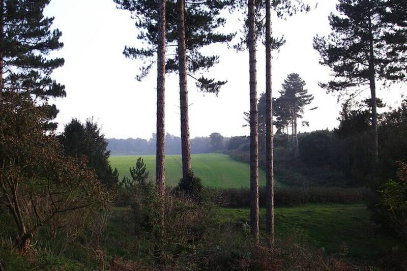

Rendlesham Forest incident
Suffolk, England, 1980

In December 1980, U.S. Air Force personnel from RAF Bentwaters and RAF Woodbridge reported lights and a landed craft in the forest. Deputy base commander Lt. Col. Charles Halt wrote a memo and recorded an audio tape. Skeptics point to the nearby Orford Ness lighthouse. 1
Open in the interactive Watcher
Related
- A craft landed in Rendlesham Forest in 1980 Claim
- Jim Penniston Person
- John Burroughs Person
- Jenny Randles Person
- Charles Halt Person
Sources
- Rendlesham Forest incident Wikipedia